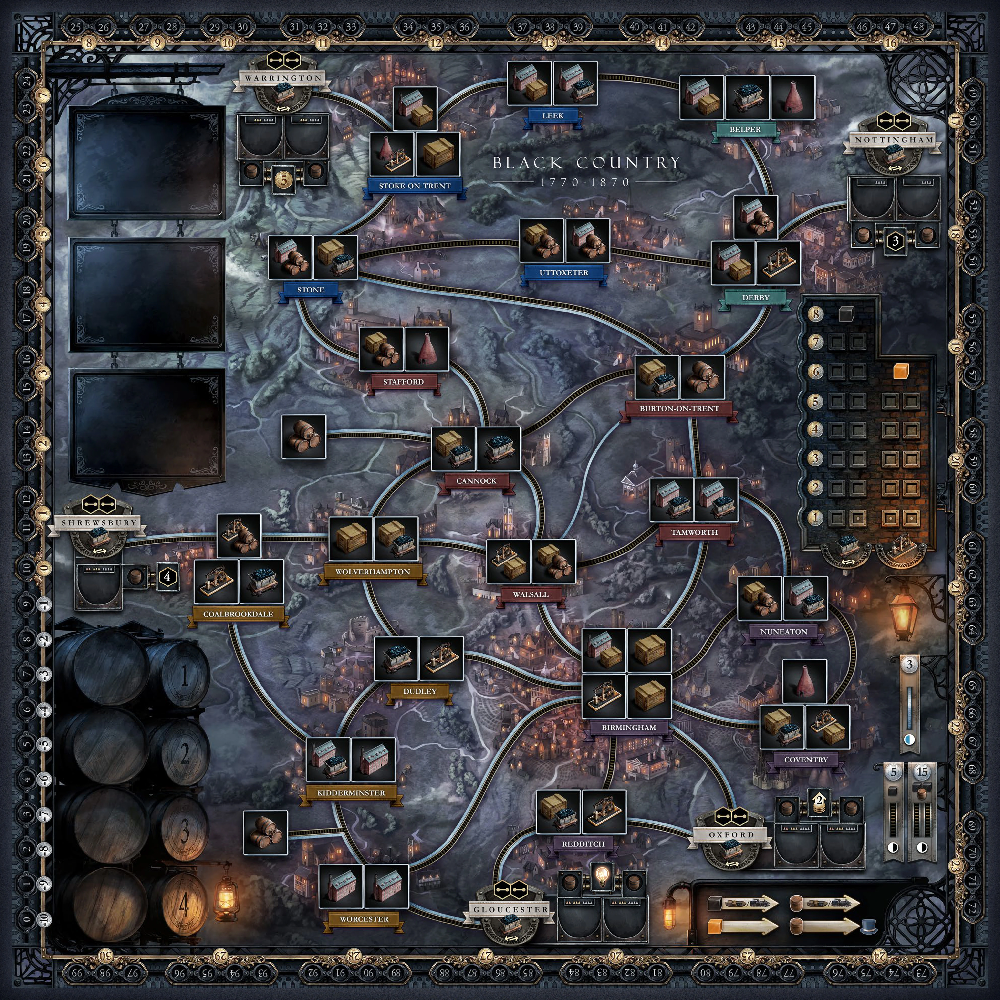
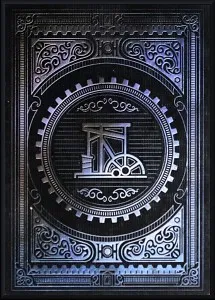
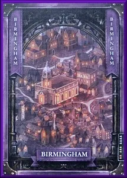
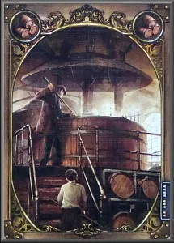

点击城市产业位查看可执行行动
你的手牌

 路克球的桌游实验室← 返回桌游展架B工业革命：伯明翰在线对战 · 测试版 0.19
路克球的桌游实验室← 返回桌游展架B工业革命：伯明翰在线对战 · 测试版 0.19BRASS / BIRMINGHAM
铺设运河与铁路，建厂、出售、积累收益。
在两个时代里，经营你的工业版图。



牌已备好，只差你入座。SET YOUR TABLE
选好人数，与规则AI切磋，或邀朋友同桌。
对局人数
正在准备规则与棋盘…
房主保持页面开启；空位可由规则AI补齐。
路克球的桌游实验室 · 保持好奇，认真开玩。

展示牌组构成；标记自己手牌和公开出现的牌，不显示牌序或他人手牌。